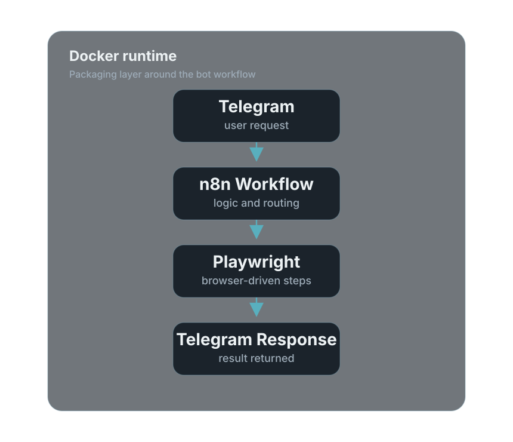

Independent Build
Telegram Bot for Game Utility
A personal side project built around a game-related use case, and a practical way for me to explore Docker, n8n, and Playwright by building something real and publicly usable through Telegram.
Problem
I wanted something more useful than a demo project sitting on my laptop.
This started as a personal side project for my own game-related use case. I wanted to build something that was actually useful to me, not just a throwaway demo. As the project evolved, it also became a practical way for me to explore Docker, n8n, and Playwright in a more hands-on way.
Context
The idea was to make a game-related workflow easier to access through Telegram.
I like building around problems that I personally understand. In this case, the project came from my own interest in gaming and the idea of making that workflow more convenient through a Telegram bot. I also wanted a side project that would push me to learn tools I do not normally use in my day-to-day work.
What I Built
A Telegram-based workflow that connects messaging, automation, and browser-driven actions.
The bot is designed to let users interact with a game-related workflow through Telegram. Since it is publicly accessible, people can try it directly instead of just reading about it. That was important to me because I wanted the project to feel real and usable, not just theoretical.
Technical Approach
Telegram handles the interface, n8n handles the workflow, and Playwright handles browser-based steps.
I used Telegram as the user-facing entry point, n8n to connect and automate the workflow, and Playwright where browser interaction was needed. I also packaged the setup with Docker so it would be easier to run, restart, and move between environments without repeatedly dealing with local dependency issues.
Workflow Overview
A simple view of how the bot works from user request to response.
A user sends a request through Telegram. The request is picked up by the workflow in n8n, which handles the logic and decides what action to take. Where browser interaction is needed, Playwright is used to automate that step. The result is then passed back through the workflow and returned to the user in Telegram. The whole setup is packaged with Docker so it is easier to run and manage consistently.

What I Learned
The project helped me learn by connecting tools I do not normally use together in one build.
This project gave me hands-on exposure to tools that sit slightly outside my usual work scope.
With Docker, I got practical experience packaging an application so it runs in a cleaner and more consistent way. It made me think more about dependencies, startup flow, environment variables, and how to make a project easier to redeploy.
With n8n, I got a better feel for how workflow automation can be stitched together more visually and quickly. It was useful for understanding how to connect steps and reduce unnecessary glue code where that made sense.
With Playwright, I learned more about handling browser-based interactions programmatically. That gave me a better appreciation of where browser automation fits into a real workflow and the kinds of edge cases that come with it.
What I like about this project is that it was not just about getting the bot to work. It was also about learning how these pieces fit together in a practical build.
Why I Included It Here
I included it because it shows a more exploratory side of how I like to build.
Most of my day-to-day experience is in enterprise infrastructure, security operations, platform support, and automation. I included this project because it shows my willingness to explore adjacent tools on my own, build something end to end, and learn by making something real and usable.
Status
The project is live as a personal build and still open to refinement.
This remains a personal project that I can continue refining over time. The value for me is not just in the current bot, but in the practical learning that came from building and packaging it with tools I wanted to understand better.
Personal project and active independent build
Next Improvements
Further work is focused on making the workflow simpler and easier to maintain.
- Improve response handling and user feedback flow
- Refine workflow steps inside n8n
- Tighten error handling around browser-driven steps
- Continue simplifying setup and maintenance